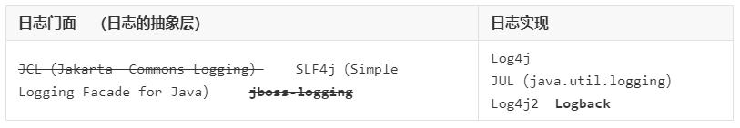
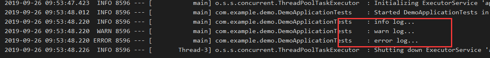
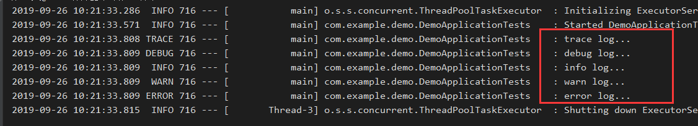
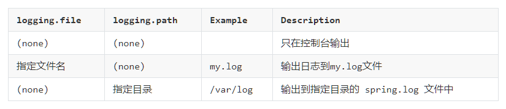

日志是一个系统中不可缺少的组件。在项目中，我们常用的日志组件有JUL、JCL、Jboss-logging、logback、log4j、log4j2、slf4j....，这里边有抽象层定义，有实现层，用一张图我们来看一下：

说明：
1.其中JCL是我们spring中的常用日志框架commons-logging，只不过在2014年就不更新了，jboss-logging是特定领域的框架，不适合我们使用。
2.springboot中采用的日志框架就是SLF4j（抽象层）和实现层Logback，log4j2和Logback都是log4j的升级版，只不过Log4j2用的还不是太广泛，现在大多数使用Logback。
现在我们使用的默认配置，springboot已经帮我们设置好了日志框架，我们直接使用就可以了。
首先我们添加引用实例，然后写上代码：
public class DemoApplicationTests {
private Logger logger = LoggerFactory.getLogger(getClass());
@Test
public void loggerTest() {
logger.trace("trace log...");
logger.debug("debug log...");
logger.info("info log...");
logger.warn("warn log...");
logger.error("error log...");
}
}输出如下：

可以看出这里我们只输入了info,warn和error的日志，其他两个trace和debug的日志没有输出来，这是什么原因呢？
其实这里的日志是分级别的，当你设置了一个日志级别之后，低于这个级别的日志信息是不会打印出来的，当我们的环境不一样的时候可能要输出的日志级别也不一样，比如开发环境可能需要debug的日志，生产环境可能需要warn和error的日志等等。
日志的级别由低到高为 trace<debug<info<warn<error，springboot中默认的级别是info级别的，所以小于info级别的trace和debug就没有输出。
我们可以在配置文件中指定日志的级别，日志级别的指定是根据包名来的，也就是你指定哪个包下的级别是多少，我们现在指定我们的这个包下的日志级别为trace，在application.properties中添加配置：
logging.level.com.example = trace重新运行测试，输出如下，说明成功设置了我们的级别：

当我们写日志的时候，我们想存储到文件中，那么我们就可以设置日志的路径。
#指定目录
#logging.path=D:/
#当前运行jar包的目录
#logging.path=spring/log
#当前运行jar包的磁盘根目录
logging.path=/spring/log三种指定路径的形式，产生的日志分别在相应的目录，一般使用logging.path=spring/log，保证在当前项目的目录产生日志，可以一个磁盘上会有多个项目。

附上一张说明，上边如果配置的logging.file或者logging.path就会写到磁盘上，如果没有就输出到控制台。
有时候我们想把日志设置一些格式，看起来方便一点，那么我们可以设置日志的格式，中间可以添加一些符号和换行之类的东西，是日志看起来更加的清晰。
# 在控制台输出的日志的格式
logging.pattern.console=%d{yyyy-MM-dd}-------- [%thread] %-5level %logger{50} -------- %msg%n
# 指定文件中日志输出的格式
logging.pattern.file=%d{yyyy-MM-dd} === [%thread] === %-5level === %logger{50} ==== %msg%n%d：日期，{yyyy-MM-dd}表示日期的格式。
%thread：当前线程。
%level：日志级别，-5表示总共占5个字符，不足的用空格补齐。
%logger：日志记录器的类型，也就是getLogger()的参数类型。
%msg：日志内容。
%n：换行。
带%的都是一些特殊占位符，其他是就是我们添加的格式了，具体的参数可以查阅官方文档就行了。
最简单日志使用基本就这些了，如果还需要高级的使用方法，就可以去参考官方文档了，今天我们先介绍这么多。